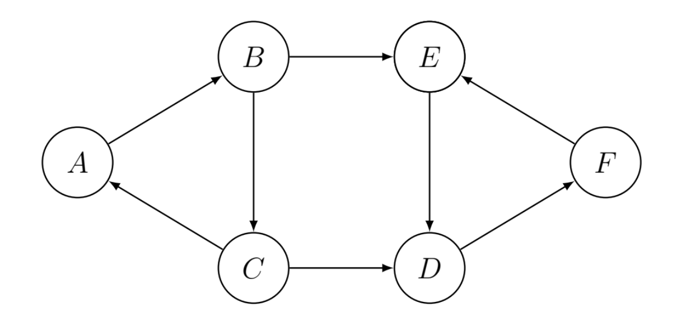
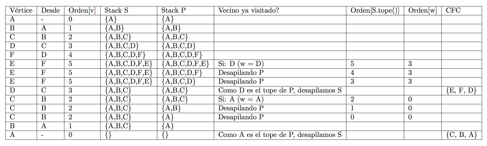

Componentes fuertemente conexas (CFC)¶
Una componente fuertemente conexa de un grafo dirigido es un conjunto de vértices dentro del grafo donde todos esos vértices se conectan todos entre sí (existe un camino de cualquiera de esos vértices, a cualquier otro). Un grafo dirigido puede tener ninguna, una o más CFC‘s. Vale aclarar que nos interesan obtener las CFC más grandes (dentro de cualquier CFC, cualquier subconjunto de ésta va a ser una CFC en sí).
Algoritmo de Tarjan¶
Para resolver este problema, vamos a utilizar el Algoritmo de Tarjan. Existe alternativamente el Algoritmo de Kosaraju, que no analizaremos en este apunte.
La idea del algoritmo de Tarjan es realizar un recorrido en profundidad (DFS), contando con dos pilas, S y P, y el orden del recorrido en profundidad, respecto de la exploración en profundidad. Para cada vértice no visitado ponemos su orden en 0 y: 1. Marcamos a v como visitado, con su orden. 1. Apilar al vértice en S y P. 1. Para cada vértice w adyacente a v: * Si no fue visitado, visitarlo (recursivamente). * Si ya fue visitado, si no está ya en una CFC: desapilar de P hasta que el tope tenga un orden menor o igual al de w. 1. Si v es tope de P: a. Desapilar de S hasta llegar a tener de tope a v, y agregar todos los vértices a una CFC. a. Desapilar v de P.
def dfs_cfc(grafo, v, visitados, orden, p, s, cfcs, en_cfs):
visitados.agregar(v)
s.apilar(v)
p.apilar(v)
for w in grafo.adyacentes(v):
if w not in visitados:
orden[w] = orden[v] + 1
dfs_cfc(grafo, w, visitados, orden, p, s, cfcs, en_cfcs)
elif w not in en_cfs:
while orden[p.ver_tope()] > orden[w]:
p.desapilar()
if p.ver_tope() == v:
p.desapilar()
z = None
nueva_cfc = []
while z != v:
z = s.desapilar()
en_cfs.agregar(z)
nueva_cfc.append(z)
cfcs.append(nueva_cfc)
def cfc(grafo):
visitados = set()
orden = {}
p = Pila()
s = Pila()
cfcs = []
en_cfs = set()
for v in grafo:
if v not in visitados:
orden[v] = 0
dfs_cfc(grafo, v, visitados, orden, p, s, cfcs, en_cfs)
return cfcs
Siendo que es tan solo una aplicación de un algoritmo DFS, que utiliza pilas (las operaciones son de tiempo constante), y cada vértice aparece una vez en cada pila únicamente, el orden será . Realizamos el seguimiento, paso a paso, sobre el siguiente grafo:
 
Bibliografía y referencias¶
- Weiss, Mark Allen: “Data Structures and Algorithms” (tercera edición), Pearson, 1999. Cap. 9.6.5: Finding Strong Components.
- Cormen, Thomas; Leiserson, Charles; Rivest, Ronald; Stein, Clifford: “Introduction to Algorithms” (tercera edición), MIT Press, 2009. Cap. 22.5: Strongly Connected Components.